1080B39 right catalytic preconverter r r or replace cylinder head gasket
- Path
- Procedures > 10 ENGINE > 1080 EXHAUST EMISSION CONTROL SYSTEM > 1080B exhaust emission control system > 1080B39 right catalytic preconverter r r or replace cylinder head gasket
- Kind
- repair procedure (removal / refitting; the operation number is the code)
- Applies to
- engines: 2.5 V6, 3.2 V6; all production periods
- Interactive page
- https://sloeber94.github.io/elrnDB-a156/en/#/3237583
Applies to: engines: 2.5 V6, 3.2 V6; all production periods; only with equipment: Euro 3
 Removing
Removing
 Refitting
RefittingPlace the car on the ramp.
1. Loosen the band (1a) and disconnect the oil vapour recirculation pipe (1b) from the corrugated hose.
2. Loosen the bands (2a) and remove the corrugated hose (2b), complete with resonator (2c).
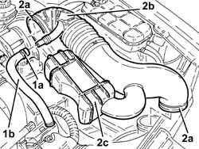
Applies to: engines: 2.5 V6, 3.2 V6; all production periods; only with equipment: Euro 3
Proceed with removal 5530B10 battery - r+r .
Drain the air conditioner coolant circuit 5040A10 Air conditioning refrigerant CIRCUIT - Draining and Refilling .
Proceed with removal 7055B54 under-engine guard - r r .
1. Open the electrical connections box cover.
2. Disconnect the electrical connection for the right Lambda sensor and release the wiring from the bands.
 | Name | Connector |
|---|---|---|
2 | Lambda sensor on pre-catalyzer -2 |
3. Disconnect the electrical connection from the throttle body integrated with the D.V.L.
| Name | Connector |
|---|---|---|
3 | Throttle body actuator |
4. Loosen the band (4a) and disconnect the vacuum intake pipe (4b) from the air capacity chamber.
5. Disconnect the fuel vapour recirculation pipe quick-release fitting from the air chamber.
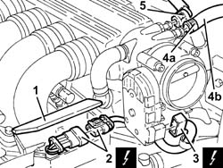
Applies to: engines: 2.5 V6, 3.2 V6; all production periods; only with equipment: Euro 3
1. Position a hydraulic jack under the radiator lower crossmember.
2. Loosen the bolts (2a) and undo the bolts (2b) fixing the lower radiator crossmember to the bodyshell.
3. Disconnect the rapid connector for the lower radiator coolant outlet hose, radiator side.
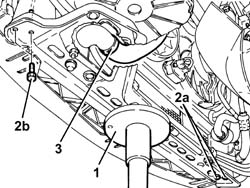
Applies to: engines: 2.5 V6, 3.2 V6; all production periods; only with equipment: Euro 3
1. Undo the nut fixing the electrical wiring mounting bracket to the battery drip tray.
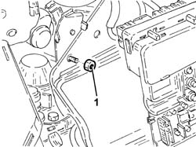
Applies to: engines: 2.5 V6, 3.2 V6; all production periods; only with equipment: Euro 3
1. Disconnect the gear selector and engagement cables.
2. Undo the nuts (2a) and move the mounting bracket (2b) for the gear selector and engagement cables to the side.
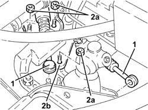
Applies to: engines: 2.5 V6, 3.2 V6; all production periods; only with equipment: Euro 3
1. Disconnect the electrical connection from the injection-ignition electronic control unit.
| Name | Connector |
|---|---|---|
1 | Engine management ECU |
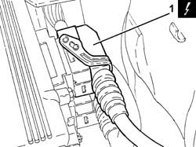
Applies to: engines: 2.5 V6, 3.2 V6; all production periods; only with equipment: Euro 3
1. Undo the bolts (1a) and remove the power unit reaction rod (1b).
2. Undo the nuts (2a) and remove the upper bracket on the bodyshell for the reaction rod (2b).
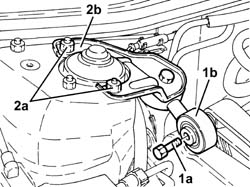
Applies to: engines: 2.5 V6, 3.2 V6; all production periods; only with equipment: Euro 3
Withdraw the oil level dipstick.
1. Undo the bolt (1a) and remove the bracket (1b) joining the front sections of the exhaust pipe.
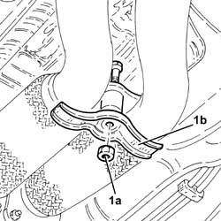
Applies to: engines: 2.5 V6, 3.2 V6; all production periods; only with equipment: Euro 3
1. Undo the lower bolt fixing the left catalytic preconverter heat shield.
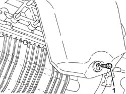
Applies to: engines: 2.5 V6, 3.2 V6; all production periods; only with equipment: Euro 3
1. Undo the nuts fixing the exhaust pipes between the catalytic preconverters and the catalytic converter, catalytic preconverter side.
Remove the gaskets.
Secure the exhaust pipe between the left catalytic preconverter and the catalytic converter at the side.
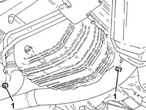
Applies to: engines: 2.5 V6, 3.2 V6; all production periods; only with equipment: Euro 3
1. Undo the nut (1a) and remove the engine oil dipstick tube (1b).
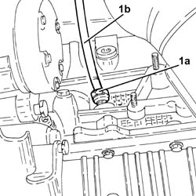
Applies to: engines: 2.5 V6, 3.2 V6; all production periods; only with equipment: Euro 3
1. Position a hydraulic jack under the gearbox.
2. Undo the bolts fixing the power unit gearbox side rigid support to the flexible mounting.
3. Disconnect the electrical connection from the reversing lights switch.
| Name | Connector |
|---|---|---|
3 | Reversing lights switch |
Lower the hydraulic jack slowly, then remove it.
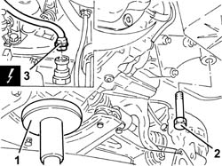
Applies to: engines: 2.5 V6, 3.2 V6; all production periods; only with equipment: Euro 3
1. Open the bands fastening the air conditioning system pipes to the right panel.
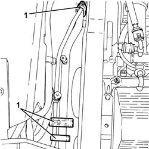
Applies to: engines: 2.5 V6, 3.2 V6; all production periods; only with equipment: Euro 3
1. Undo the right Lambda sensor using a suitable spanner and remove it.
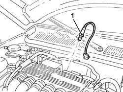
Applies to: engines: 2.5 V6, 3.2 V6; all production periods; only with equipment: Euro 3
Release the starter motor electrical wiring from the fastenings.
1. Undo the bolts (1a) and move the rigid coolant supply pipe (1b) to the engine oil heat exchanger.
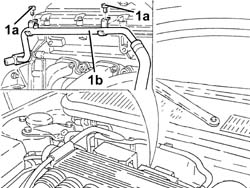
Applies to: engines: 2.5 V6, 3.2 V6; all production periods; only with equipment: Euro 3
1. Undo the nuts (1a) and remove the right catalytic preconverter heat shield (1b).
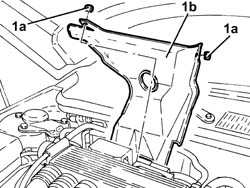
Applies to: engines: 2.5 V6, 3.2 V6; all production periods; only with equipment: Euro 3
1. Disconnect the remaining electrical connection from the injection/ignition control unit.
| Name | Connector |
|---|---|---|
1 | Engine management ECU |
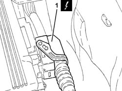
Applies to: engines: 2.5 V6, 3.2 V6; all production periods; only with equipment: Euro 3
1. Undo the nuts (1a) and remove the injection/ignition control unit (1b).
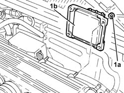
Applies to: engines: 2.5 V6, 3.2 V6; all production periods; only with equipment: Euro 3
1. Undo the bolt (1a) and disconnect the earth lead (1b) from the air chamber.
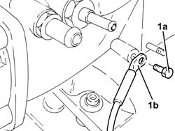
Applies to: engines: 2.5 V6, 3.2 V6; all production periods; only with equipment: Euro 3
1. Open the electrical connections box cover.
2. Disconnect the engine coupling.
3. Disconnect the electrical connections (3a) and (3b) for the rear Lambda sensors and the catalytic converter.
| Name | Connector |
|---|---|---|
3a | Lambda sensor on catalyzer |
| Name | Connector |
|---|---|---|
3b | Lambda sensor on catalyzer -2 |
4. Disconnect the electrical connection for the detonation sensor, timing side.
| Name | Connector |
|---|---|---|
4 | Detonation sensor - 1 |
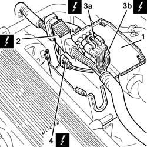
Applies to: engines: 2.5 V6, 3.2 V6; all production periods; only with equipment: Euro 3
1. Undo the bolts (1a) and remove the connections box (1b).
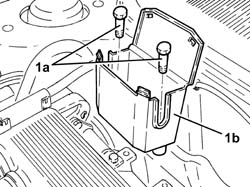
Applies to: engines: 2.5 V6, 3.2 V6; all production periods; only with equipment: Euro 3
1. Undo the bolts (1a) and remove the reinforcement (1b) between the air chamber and bracket on the engine for the reaction link.
2. Release the fuel delivery pipe from the fastening on the air chamber.
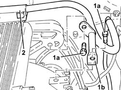
Applies to: engines: 2.5 V6, 3.2 V6; all production periods; only with equipment: Euro 3
1. Disconnect the oil vapour recovery pipe from the air chamber.
2. Loosen the bolts fixing the intakes to the manifolds.
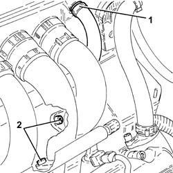
Applies to: engines: 2.5 V6, 3.2 V6; all production periods; only with equipment: Euro 3
1. Loosen the bands securing the air intakes to the air chamber.
2. Undo the bolts (2a) and remove the air chamber (2b).
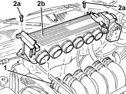
Applies to: engines: 2.5 V6, 3.2 V6; all production periods; only with equipment: Euro 3
Release the vacuum intake pipe, the engine wiring and the wiring for the injection/ignition control unit from the fastenings.
1. Release the fuel vapour recovery pipe (1a) from the bands (1b).
2. Undo the bolts (2a) and remove the bracket (2b) from the engine compartment bulkhead.
3. Undo the bolt (3a) and disconnect the coolant inlet/outlet pipes (3b) from the air conditioning system evaporator and move them to the side.
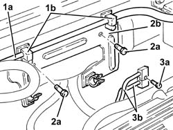
Applies to: engines: 2.5 V6, 3.2 V6; all production periods; only with equipment: Euro 3
1. Undo the nuts (1a) and remove the right catalytic preconverter (1b) complete with gaskets.
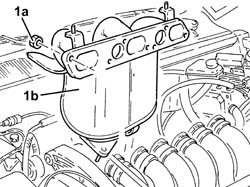
Applies to: engines: 2.5 V6, 3.2 V6; all production periods; only with equipment: Euro 3
Refitting
Removing1. Place the right catalytic preconverter (1a), complete with gaskets, back in its housing and secure it tightening the nuts (1b) to the recommended torque.
 | Fastening | Component | Ø | Value (daNm) |
|---|---|---|---|---|
1b | Nut | RIGHT PRECONVERTER | M8 | (Cylinder head side) 2.3 ÷ 2.8 |
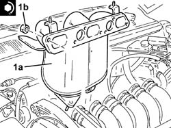
Applies to: engines: 2.5 V6, 3.2 V6; all production periods; only with equipment: Euro 3
Connect the coolant inlet/outlet pipes to the air conditioning system evaporator and tighten the bolt to the recommended torque.
| Fastening | Component | Ø | Value (daNm) |
|---|---|---|---|---|
- | Bolt | EVAPORATOR CONNECTORS | M6 | 0.9 ÷ 1.2 |
Place the bracket back in its housing on the engine compartment bulkhead and secure it using the bolts.
Secure the fuel vapour pipe using the bands.
Secure the vacuum intake pipe, the engine wiring and the wiring for the injection/ignition control unit to the fastenings.
Place the air chamber back in its housing and secure it using the bolts.
Tighten the bands securing the air intakes to the air chamber.
Tighten the bolts securing the air intakes to the manifolds.
Connect the fuel vapour recovery pipe to the air chamber.
Secure the fuel delivery pipe to the fastening on the air chamber.
Refit in its seating the reinforcement between the air chamber and bracket on the engine for the reaction link and secure it with its bolts.
Refit the connection box and secure with the bolts.
Connect the electrical connection for the detonation sensor, timing side.
Connect the electrical connections for the rear Lambda sensors to the catalytic converter.
Connect the engine junction.
Close the electrical connections box cover.
Connect the earth lead to the air chamber and secure it using the bolts.
Place the injection/ignition control unit back in its housing and fix it using the nuts.
Connect the lower electrical connection to the fuel injection-ignition control unit.
Place the right catalytic preconverter heat shield back in its housing and secure it using the nuts.
Place the rigid coolant supply pipe to the engine oil heat exchanger back in its housing and secure it using the bolts.
Secure the starter motor electrical wiring to the fastenings.
1. Place the right Lambda sensor back in its housing and tighten it to the recommended torque.
| Fastening | Component | Ø | Value (daNm) |
|---|---|---|---|---|
1 | - | RIGHT LAMBDA SENSOR | M18 | (Right preconverter side) 4.0 ÷ 5.0 |
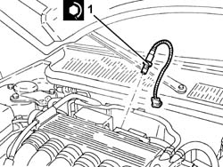
Applies to: engines: 2.5 V6, 3.2 V6; all production periods; only with equipment: Euro 3
Close the bands fastening the air conditioning system pipes to the right panel.
Place the power unit back in its housing using the hydraulic jack.
1. Connect the electrical connection to the reversing lights switch.
2. Undo the bolt fixing the gearbox side rigid power unit support to the flexbile block to the specified torque.
| Fastening | Component | Ø | Value (daNm) |
|---|---|---|---|---|
2 | Bolt | POWER UNIT GEAR BOX END RIGID MOUNT | M10 | (Flexible mounting side) 4.3 ÷ 5.3 |
3. Remove the hydraulic jack from under the gearbox.
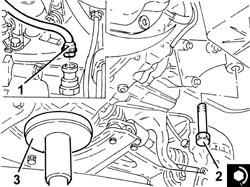
Applies to: engines: 2.5 V6, 3.2 V6; all production periods; only with equipment: Euro 3
Place the guide pipe for the engine oil dipstick back in its housing and secure it using the nut.
1. Connect the exhaust pipes between the catalytic preconverters and the catalytic converter (1a), catalytic preconverter side, with the gaskets fitted and tighten the nuts (1b) to the recommended torque.
| Fastening | Component | Ø | Value (daNm) |
|---|---|---|---|---|
1b | Nut | RIGHT PRECONVERTER.CONVERTER PIPE/ | M8 | (Catalytic preconverter side) 2.5 ÷ 3.1 |
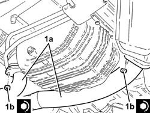
Applies to: engines: 2.5 V6, 3.2 V6; all production periods; only with equipment: Euro 3
Tighten the lower bolt fixing the left catalytic preconverter heat shield.
Place the bracket joining the front sections of the exhaust pipe and secure it using the bolt.
Place the engine oil dipstick back in its seating.
1. Place the upper bracket on the bodyshell for the reaction rod (1a) back in its housing and tighten the nuts (1b) to the recommended torque.
| Fastening | Component | Ø | Value (daNm) |
|---|---|---|---|---|
1b | Nut | REACTION LINK ATTACHMENT BRACKET | M8 | (Bodyshell side) 2.0 ÷ 2.5 |
2. Place the power unit reaction rod (2a) back in its housing and fix it tightening the bolts (2b) to the recommended torque.
| Fastening | Component | Ø | Value (daNm) |
|---|---|---|---|---|
2b | Bolt | REACTION ROD | M10 |
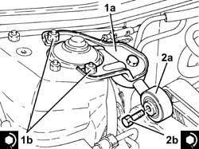
Applies to: engines: 2.5 V6, 3.2 V6; all production periods; only with equipment: Euro 3
Connect the remaining electrical connection to the fuel injection-ignition control unit.
Place the gear selector and engagement cables mounting bracket back in its housing and secure it using the nuts.
Connect the gear selector and engagement cables.
Tighten the nut fixing the electrical wiring mounting bracket to the battery drip tray.
Connect the rapid attachment for the lower coolant outlet hose from the radiator, radiator side.
Tighten the bolts securing the radiator bottom crossmember to the bodywork.
Remove the hydraulic jack from underneath the lower radiator crossmember.
Connect the fuel vapour recovery pipe quick release fitting to the air chamber.
Connect the vacuum intake pipe to the air chamber and tighten the band.
Connect the electrical connection to the throttle body integrated with the D.V.L.
Connect the electrical connection for the right Lambda sensor and fasten the electrical wiring using the bands.
Close the electrical connections box cover.
Proceed with refitting 7055B54 under-engine guard - r r .
Fill the air conditioner coolant circuit 5040A10 Air conditioning refrigerant CIRCUIT - Draining and Refilling .
Proceed with refitting 5530B10 battery - r+r .
Place the corrugated hose, complete with resonator, back in its housing and tighten the bands.
Connect the oil vapour recirculation pipe to the corrugated hose and tighten the band.
Supply the engine cooling system with the recommended fluid.
 | Type | Component | Name | Qty. |
|---|---|---|---|---|
- | Fluid [l] | ENGINE COOLING CIRCUIT | Mixture 50% Paraflu11 for Alfa Romeo/distilled water | 9.2 |
Remove the car from the ramps.
Topics linked from this page (12)
- 1056B81 run electronic ignition/injection control unit (single) self-learning procedure
- 5040A10 Air conditioning refrigerant CIRCUIT - Draining and Refilling
- 5530B10 battery - r+r
- 7055B54 under-engine guard - r r
- I20 Reversing lights switch
- K16 Lambda sensor on pre-catalyzer -2
- K17 Lambda sensor on catalyzer
- K18 Lambda sensor on catalyzer -2
- K50 Detonation sensor - 1
- M10A Engine management ECU ( ENGINE )
- M10B Engine management ECU ( ENGINE )
- N75 Throttle body actuator